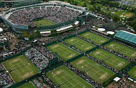
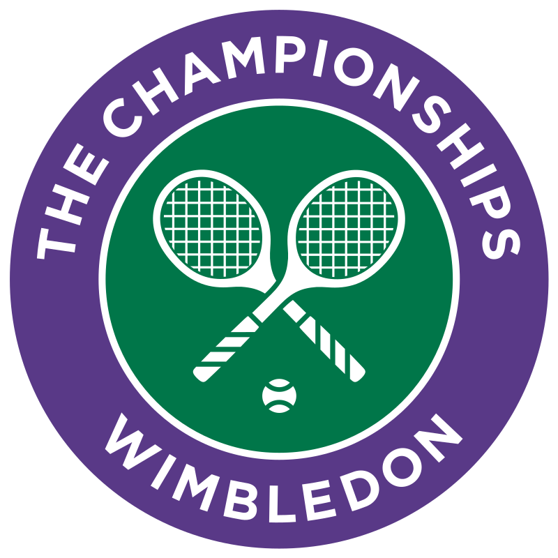
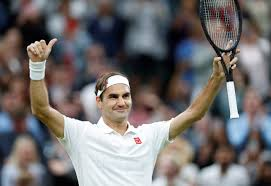
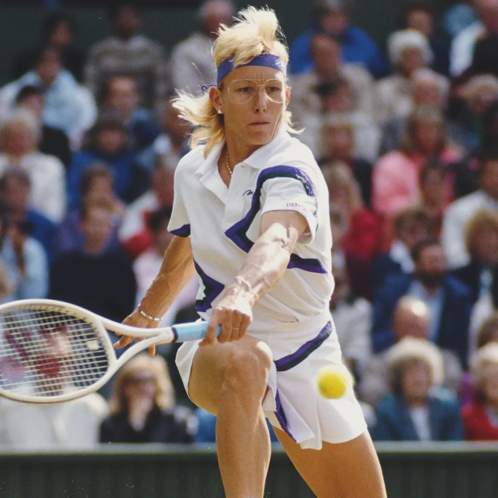
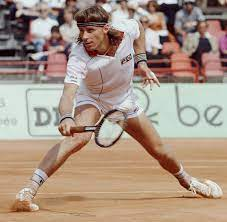
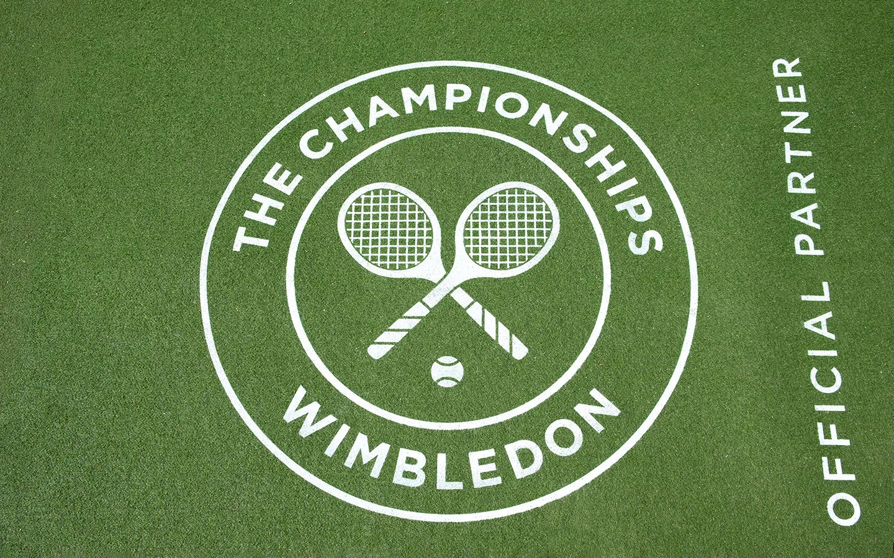
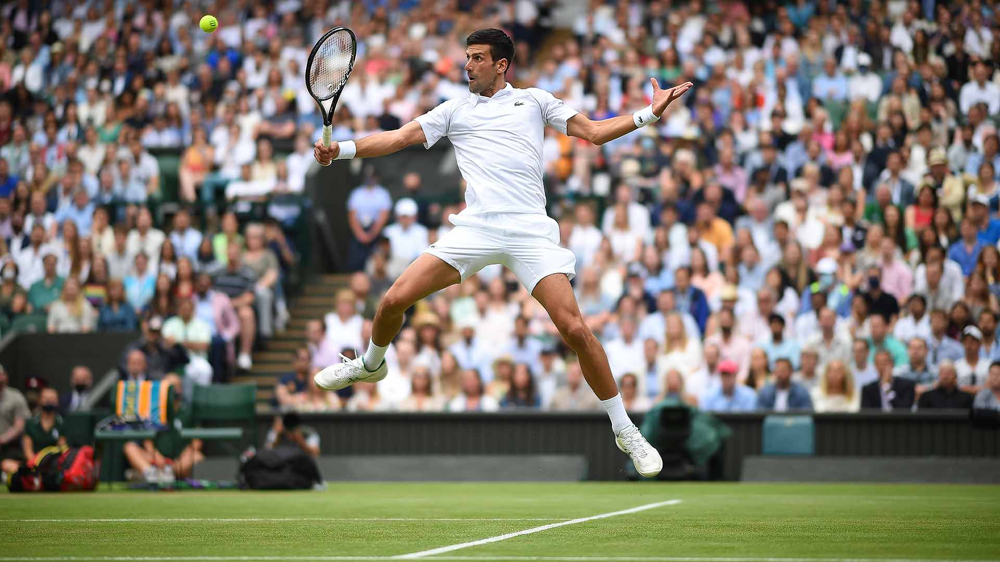
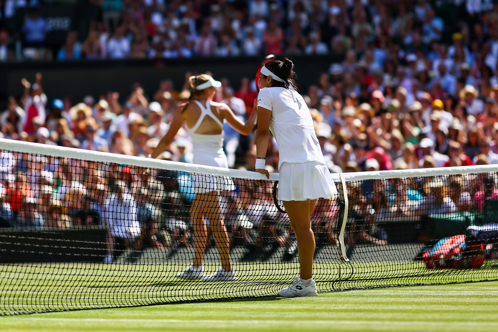
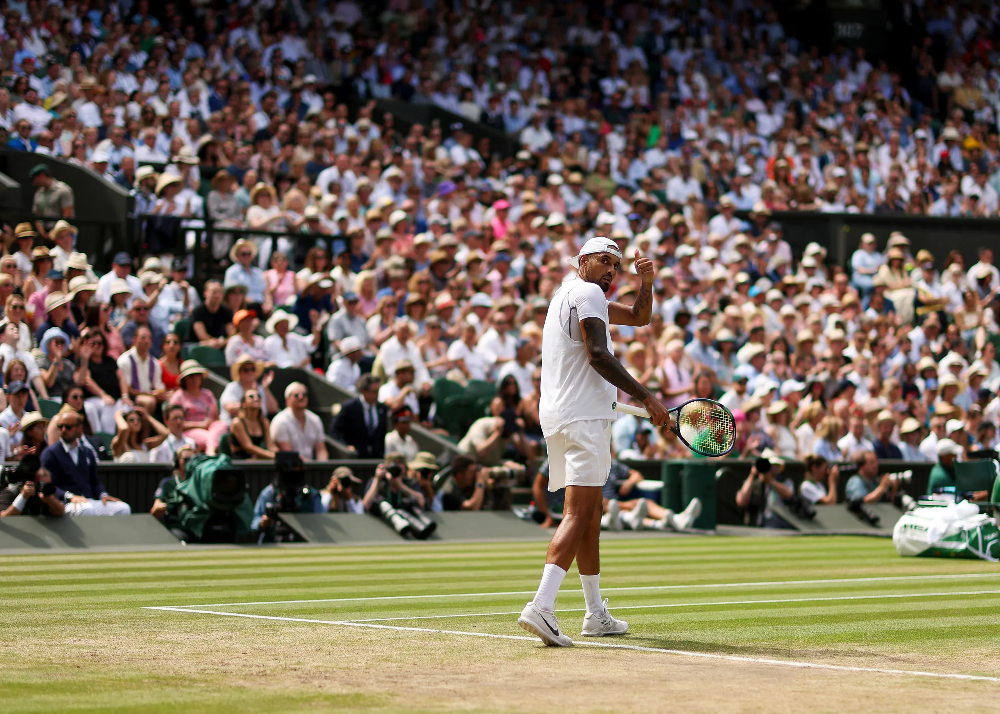
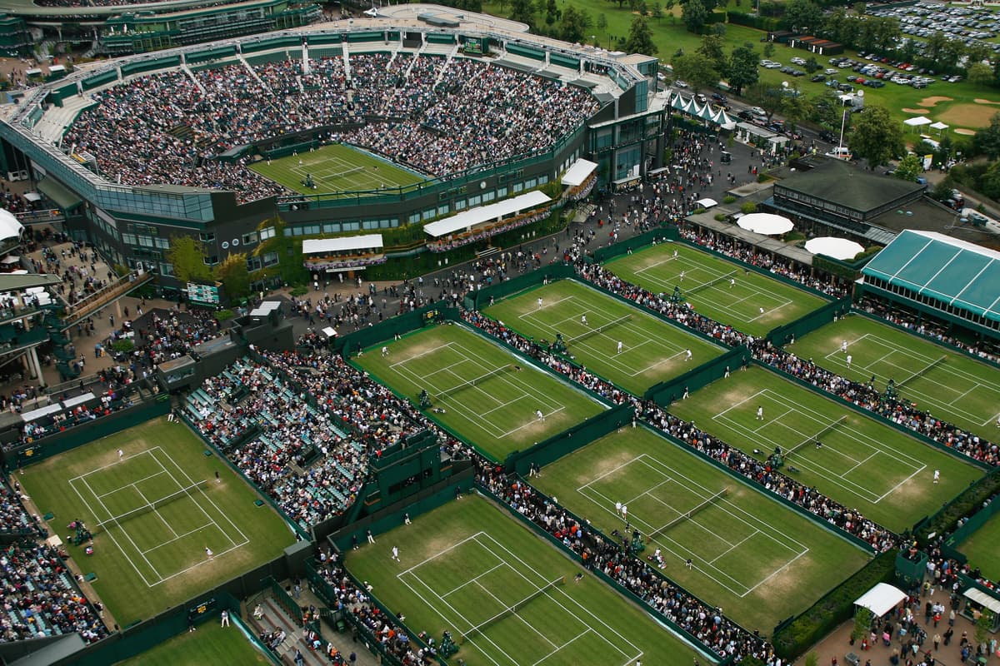

Wimbledon is the oldest and most prestigious tennis tournament in the world, and is considered by many to be the pinnacle of the sport. Held annually in London, England, the tournament is steeped in tradition and history, and is renowned for its immaculate grass courts and strict dress code. The tournament attracts the best players in the world, who compete for the ultimate prize in tennis: the Wimbledon trophy. With a rich history spanning over 140 years, Wimbledon is a must-see event for any tennis fan, and is an integral part of the sport's heritage.

Wimbledon is the only one of the four Grand Slam tennis tournaments that is still played on grass courts. The grass surface is considered to be more challenging and requires players to adjust their playing style accordingly.DAD

Wimbledon is the oldest and most prestigious tennis tournament in the world. It was first held in 1877 and has been played annually ever since, except for during the two World Wars.

Wimbledon is famous for its strict dress code, which requires players to wear all-white clothing on the court. This tradition dates back to the 1800s, when white clothing was considered more practical for playing in hot weather and also helped to conceal any sweat stains.

Roger Federer
Federer is a Swiss professional tennis player who has won Wimbledon eight times, most recently in 2017. He is also considered to be one of the greatest tennis players of all time and has won a total of 20 Grand Slam titles, tying him with Djokovic and Rafael Nadal for the most in history.

Martina Navratilova
Martina Navratilova is a former Czech-American tennis player with 59 Grand Slam titles. She won 18 Grand Slam singles titles and 9 Wimbledon singles titles in the 1980s. Navratilova is known for her aggressive playing style and has been an advocate for social justice and LGBTQ+ rights.

Pete Sampras
Sampras is a retired American tennis player who won Wimbledon seven times, most recently in 2000. He is widely regarded as one of the greatest tennis players of all time and held the record for the most Grand Slam titles (14) before it was surpassed by Federer.
Check out these cool videos!
Some more beautiful Pictures




